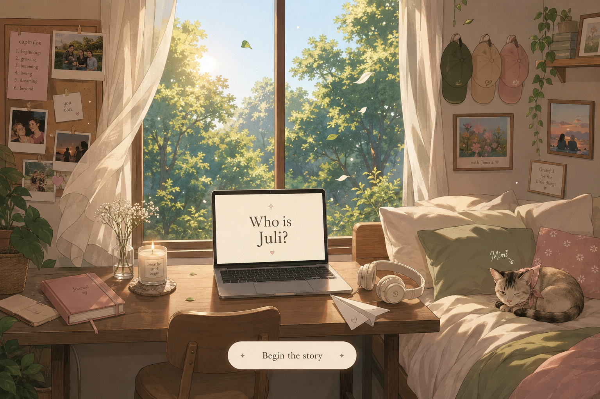
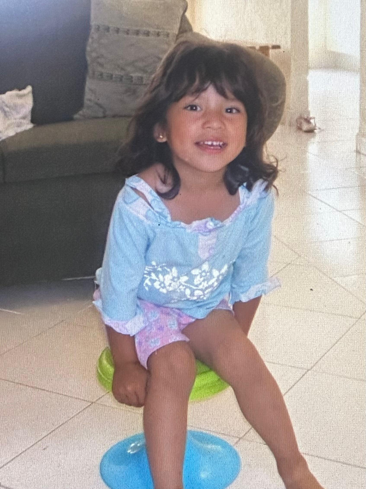
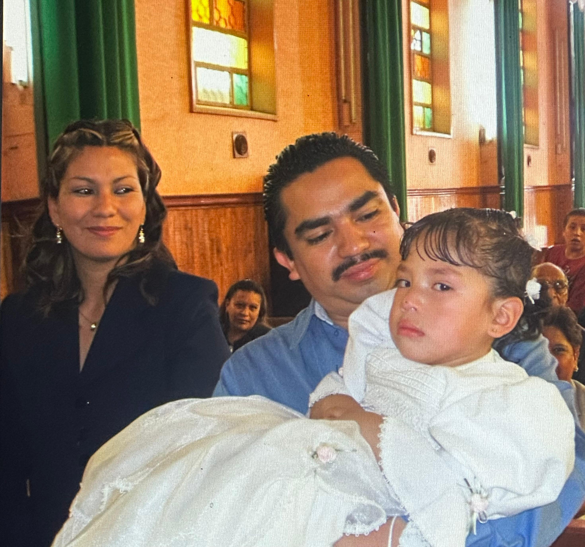
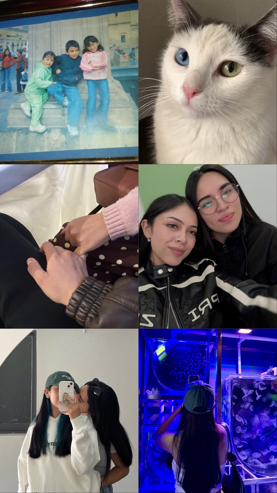
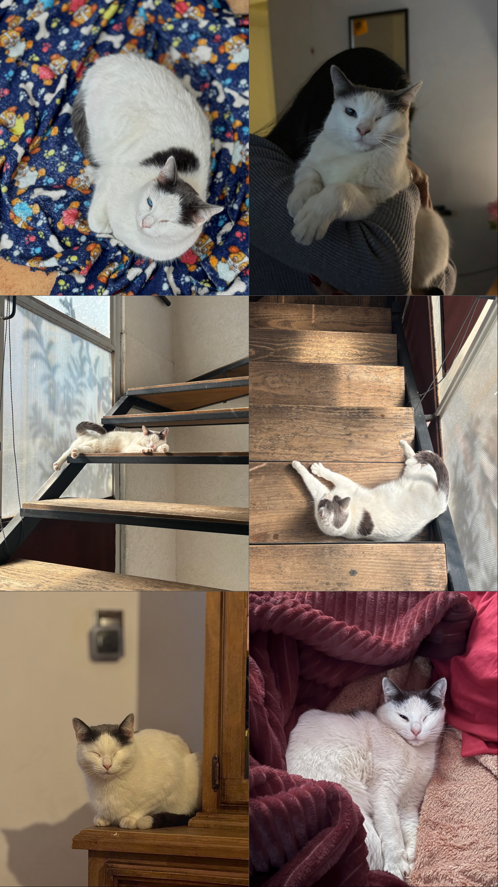

La luz de la mañana
El verde del bosque por la ventana, un inicio lento y una respiración profunda.

Capítulo I
“Antes de aprender lo complicado que podía ser el mundo, Juli solo quería descubrirlo.”
La pequeña exploradora
22 de octubre de 2003
Juli nació en una familia que la quiso desde el primer día. Sus papás cuentan que fue una niña profundamente curiosa: no le bastaba mirar las cosas, necesitaba entenderlas.
Los juguetes, la tecnología, los animales y cualquier objeto que apareciera cerca podían convertirse en una pregunta. A veces desarmaba algo solo para descubrir qué había dentro. Y aunque no siempre podía armarlo de nuevo, papá aparecía para ayudarla.

Todo podía ser un descubrimiento.
Su hogar
Su lugar favorito siempre fue su familia. Le encantaba bailar con ellos, ir al zoológico, caminar por el bosque, hacer picnics y preparar sándwiches antes de salir.
Para Juli, los momentos sencillos eran los más importantes: caminar por el centro viendo fuegos artificiales, reír sin prisa y volver a casa juntos.
La naturaleza
Juli no veía el mundo con miedo. Lo veía con curiosidad. Buscaba catarinas, hormigas, grillos y cochinitos de humedad; hasta los alacranes despertaban preguntas sobre cómo era el mundo.
Cada paseo era una aventura. Cada piedra podía esconder algo nuevo.
La magia estaba en mirar un poco más cerca.
Las personas que construyeron su infancia
Juli siempre estuvo muy unida a sus hermanos. Ale le enseñó muchas de las primeras cosas de la vida; Andrés le enseñó a imaginar, a inventar juegos y a convertir cualquier rincón en una aventura.
También guarda con muchísimo cariño a su tía Fátima, a su vecina que la cuidaba cuando era pequeña, a su maestra Amelia y a sus amigas Diana, Yamileth y Alan.

Mamá y papá
Mamá era el lugar seguro: quien la entendía, la cuidaba y le recordaba que siempre tenía un hogar. Papá fue su compañero de aventuras, quien jugaba con ella, la hacía reír y, después de correr durante horas, le daba pequeños masajes para que descansara.
Con el tiempo Juli entendió que esos gestos pequeños eran enormes demostraciones de amor.
La infancia de Juli no estuvo llena de grandes lujos. Estuvo llena de momentos. Y esos momentos serían siempre el lugar al que regresaría para recordar quién era.
Fin del capítulo ICreciendo
El entretiempo
Crecer es una colección de primeras veces: las primeras decisiones valientes, las primeras despedidas difíciles y los primeros momentos que te hacen sentir más tú. Juli aprendió a llevar ternura y fuerza en las mismas manos.
Volviéndose, poquito a poquito.

Descubriéndose
corazón suave
mente brillante
valentía tranquila
risa fuerte
La persona que es
Está hecha de canciones conocidas, pensamientos nocturnos, lealtad suave y una curiosidad que mantiene la vida luminosa. Nota los detalles. Recuerda. Hace espacio para las personas que ama.
Y sigue descubriendo más.
Pequeñas cosas
El verde del bosque por la ventana, un inicio lento y una respiración profunda.
Compañías suaves, historias propias y un pedacito de hogar sobre la cama.
La música para caminar, trabajar y acompañar todos los momentos intermedios.

Una pequeña compañera tuerta, dormida cerca y completamente en casa.
Amor
Con Jimena
Hay amores que se sienten como ser vista en los momentos más pequeños: una mirada compartida, una broma privada, una mano que se encuentra sin pedirla. De esos que hacen brillar un poco más los días ordinarios.
Un nosotras, tranquilo y bonito.
Sin dejar de convertirse
No existe una versión final de una persona. Solo hay nuevas mañanas, nuevas habitaciones, nuevos sueños y el hermoso trabajo de volver a ser tú, una y otra vez.
Continuará, con amor.